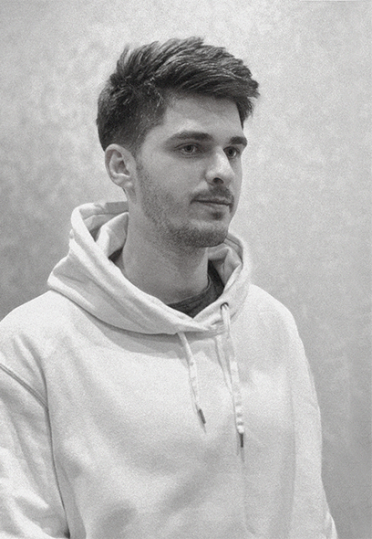

Иван Чуркин
Привет.
Я дизайнер. Moй основной профиль — дизайн сайтов и других диджитал продуктов. Также мне нравится работать с графическим дизайном.
Связываться со мной лучше по почте ⤷︎ Mail@ivanc.ru
Ссылки:
Behance |
Вк |
Facebook
Скачать резюме 📄
Проекты, например
All tiers
↗ Behance
Каталог шин и дисков. Дизайнерил и менеджерил.
Vitamin
↗ Ссылка на сайт
Доставка фруктов по подписке. Дизайн.
Портал О!Сургут
↗ Behance
Главный портал г.Сургута. Дизайнерил и менеджерил.
Твой выбор
↗ Behance
Здоровое питание с доставкой. Дизайн.
Weeek
↗ Ссылка на сайт
Сервис по управлению личными и командными проектами. Побыл продукт-менеджером и немного дизайнером.
Еще
Разработал дизайн Сибирь Аква, поучавствовал в криптовалютном проекте Neironix и промо-сайтe пельмешек Daмпл'S, разрабатывал дизайн сайта и фирстиль для строительной компании Domi, арт‑директорил промо-компанию СИА-Пресс и др.
Иногда я что-то пишу про дизайн или о проектах в которых учавствую
Weeek — сервис для управления личными и командными проектами
↗ Vc.ru
Признана редакцией Vc образцовой статьей про стартап. Висит на доске почета.
Polaroid и Black Star: как одновременно не сесть на два стула и выполнить KPI
↗ Vc.ru
Neironix без коммерции. Рассказ инсайдера
↗ Вк
Заблокирована на Vc вместе со мной на 3 месяца за «рекламу и пропаганду».
Дизайн продает простотой
↗ Блог Gold Carrot
Хождение около правил Дитера Рамса. И немного про маркетинг.